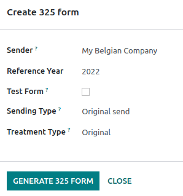
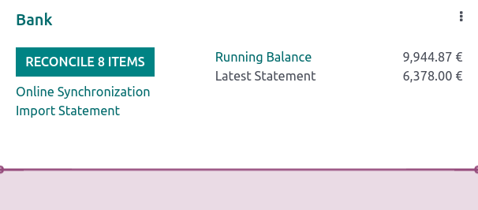

ประเทศเบลเยียม¶
การกำหนดค่า¶
ติดตั้ง 🇧🇪 ประเทศเบลเยียม แพ็คเกจการประยุกต์ใช้ทางการเงิน เพื่อรับฟีเจอร์ระบบบัญชีเริ่มต้นทั้งหมดของการประยุกต์ใช้สำหรับประเทศเบลเยียม ตามกฎ IFRS
ผังบัญชี¶
คุณสามารถเข้าถึง ผังบัญชี โดยไปที่
ผังบัญชีประเทศเบลเยียมประกอบด้วยบัญชีที่กำหนดค่าไว้ล่วงหน้าตามที่อธิบายไว้ใน PCMN หากต้องการเพิ่มบัญชีใหม่ คลิก สร้าง บรรทัดใหม่จะปรากฏขึ้น กรอกข้อมูล คลิก บันทึก จากนั้นคลิก การตั้งค่า เพื่อกำหนดค่าเพิ่มเติม
See also
ภาษี¶
ภาษีสำหรับประเทศเบลเยียมเริ่มต้นจะถูกสร้างขึ้นโดยอัตโนมัติเมื่อมีการติดตั้งโมดูล ประเทศเบลเยียม - ระบบบัญชี และ ประเทศเบลเยียม - รายงานด้านบัญชี ภาษีแต่ละรายการจะส่งผลต่อ รายงานภาษี ของประเทศเบลเยียม ซึ่งสามารถดูได้โดยไปที่
ในประเทศเบลเยียม อัตรา VAT มาตรฐานคือ 21% แต่มีอัตราที่ต่ำกว่าสำหรับสินค้าและบริการบางประเภท อัตรากลาง 12% ใช้กับที่อยู่อาศัยทางสังคมและราคาอาหารในร้านอาหาร ในขณะที่อัตราที่ลดลง 6% ใช้กับสินค้าพื้นฐานส่วนใหญ่ เช่น อาหาร น้ำประปา หนังสือ และยารักษาโรค อัตรา 0% ใช้กับสินค้าและบริการพิเศษบางอย่าง เช่น สิ่งพิมพ์รายวันและรายสัปดาห์บางฉบับ รวมถึงสินค้ารีไซเคิล
ภาษีที่ไม่สามารถหักลดหย่อนได้¶
ในประเทศเบลเยียม ภาษีบางส่วนไม่สามารถนำไปหักลดหย่อนได้ทั้งหมด เช่น ภาษีค่าบำรุงรักษารถยนต์ ซึ่งหมายความว่าส่วนหนึ่งของภาษีเหล่านี้ถือเป็นค่าใช้จ่าย
ใน Odoo คุณสามารถกำหนดค่าภาษีที่ไม่สามารถหักลดหย่อนได้โดยการสร้างกฎภาษีสำหรับภาษีเหล่านี้และเชื่อมโยงกับบัญชีที่เกี่ยวข้อง ด้วยวิธีนี้ ระบบจะคำนวณภาษีโดยอัตโนมัติและจัดสรรให้กับบัญชีที่เหมาะสม
หากต้องการกำหนดค่าภาษีที่ไม่สามารถหักลดหย่อนใหม่ได้ ให้ไปที่ และคลิก สร้าง:
เพิ่มบรรทัด และเลือก หลัก ในคอลัมน์ ขึ้นอยู่กับ;
เพิ่มบรรทัด จากนั้นเลือก บนภาษี ในคอลัมน์ ขึ้นอยู่กับ และป้อนเปอร์เซ็นต์ ไม่สามารถหักลดหย่อนได้ ในคอลัมน์ %
ในบรรทัด ของภาษี ให้เลือก ตารางภาษี ที่เกี่ยวข้องกับภาษีของคุณ
เพิ่มบรรทัด โดยมีเปอร์เซ็นต์ หักลดหย่อน ในคอลัมน์ %;
ตั้งค่า ของภาษี ใน ขึ้นอยู่กับ;
เลือก 411000 VAT ที่สามารถขอคืนได้ เป็นบัญชี และเลือกตารางภาษีที่เกี่ยวข้อง
เมื่อคุณสร้างภาษีที่ไม่สามารถหักลดหย่อนได้ คุณสามารถนำไปใช้กับธุรกรรมของคุณได้โดยเลือกภาษีที่เหมาะสมในระหว่างการเข้ารหัสใบเรียกเก็บเงินและใบลดหนี้ ระบบจะคำนวณจำนวนภาษีโดยอัตโนมัติและจัดสรรให้กับบัญชีที่เกี่ยวข้องตามกฎภาษีที่กำหนดค่าไว้
Example
เมื่อใช้การประยุกต์ใช้สำหรับประเทศเบลเยียม ระบบจะสร้างภาษี 21% รถยนต์ ตามค่าเริ่มต้น (ไม่สามารถหักลดหย่อนได้ 50%)

รายงาน¶
นี่คือรายการรายงานเฉพาะของประเทศเบลเยียมที่มีอยู่:
งบดุล;
กำไรและขาดทุน;
รายงานภาษี;
รายการภาษีมูลค่าเพิ่มของคู่ค้า;
รายการขายของ EC;
อินทราสแทต
คุณสามารถเข้าถึงรายงานเวอร์ชันเฉพาะของประเทศเบลเยียมได้โดยคลิกไอคอน หนังสือ เมื่ออยู่ในรายงาน และเลือกเวอร์ชันประเทศเบลเยียม: (BE)

See also
รายงานค่าใช้จ่ายที่ไม่ได้รับอนุญาต¶
ค่าใช้จ่ายที่ไม่อนุญาต คือค่าใช้จ่ายที่สามารถหักออกจากผลลัพธ์ทางบัญชีของคุณได้ แต่ไม่ใช่จากผลลัพธ์ทางการเงินของคุณ
รายงานค่าใช้จ่ายที่ไม่อนุญาต สามารถดูได้โดยไปที่ ช่วยให้เกิดผลลัพธ์ทางการเงินแบบเรียลไทม์และมีการเปลี่ยนแปลงเป็นระยะ รายงานนี้สร้างขึ้นตาม หมวดหมู่รายจ่ายที่ไม่อนุญาต ที่คุณสามารถเข้าถึงได้โดยไปที่ บางหมวดหมู่มีอยู่แล้วตามค่าเริ่มต้นแต่ไม่มีราคา คลิกที่ กำหนดอัตรา เพื่ออัปเดตหมวดหมู่เฉพาะ
Tip
คุณสามารถเพิ่มอัตราได้หลายอัตราสำหรับวันต่างๆ ในกรณีนั้น อัตราที่ใช้ในการคำนวณค่าใช้จ่ายจะขึ้นอยู่กับวันที่ที่มีการคำนวณ และอัตราที่กำหนดสำหรับวันนั้น
หากคุณติดตั้งแอป ระบบขนส่ง ไว้ ให้ทำเครื่องหมายที่ช่อง หมวดหมู่รถยนต์ หากมี สิ่งนี้ทำให้ยานพาหนะเป็นสิ่งบังคับในขณะที่จองใบเรียกเก็บเงินของผู้ขาย
หากต้องการเชื่อมโยงหมวดหมู่ค่าใช้จ่ายที่ไม่อนุญาตกับบัญชีเฉพาะ ให้ไปที่ ค้นหาบัญชีที่คุณต้องการ และคลิกที่ การตั้งค่า เพิ่ม หมวดหมู่ค่าใช้จ่ายที่ไม่อนุญาต ในช่อง ค่าใช้จ่ายที่ไม่อนุญาต จากนี้ไป เมื่อมีการสร้างค่าใช้จ่ายด้วยบัญชีนี้ ค่าใช้จ่ายที่ไม่ได้รับอนุญาตจะถูกคำนวณตามอัตราที่กล่าวถึงใน หมวดค่าใช้จ่ายที่ไม่อนุญาต
มาดูตัวอย่างที่สะท้อนถึงรายจ่าย ร้านอาหาร และ รถยนต์
รายจ่ายร้านอาหาร¶
ในประเทศเบลเยียม 31% ของค่าใช้จ่าย ร้านอาหาร ไม่สามารถหักลดหย่อนได้ สร้าง หมวดหมู่ค่าใช้จ่ายที่ไม่อนุญาต ใหม่ และตั้งค่าทั้ง บัญชีที่เกี่ยวข้อง และ อัตราปัจจุบัน

รายจ่ายค่ารถยนต์: การแยกยานพาหนะ¶
ในประเทศเบลเยียม เปอร์เซ็นต์การหักลดหย่อนจะแตกต่างกันไปในแต่ละคัน ดังนั้นจึงควรระบุสำหรับรถยนต์แต่ละคัน โดยเปิด และเลือกยานพาหนะ ในแท็บ ข้อมูลภาษี ให้ไปที่ส่วน อัตราค่าใช้จ่ายที่ไม่อนุญาต และคลิกที่ เพิ่มบรรทัด เพิ่ม วันที่เริ่มต้น และ % จำนวนเงินจะอยู่ในบัญชีเดียวกันสำหรับค่ารถยนต์ทั้งหมด
เมื่อคุณสร้างใบเรียกเก็บเงินสำหรับค่าใช้จ่ายรถยนต์ คุณสามารถเชื่อมโยงค่าใช้จ่ายแต่ละรายการกับรถยนต์คันใดคันหนึ่งได้โดยการกรอกคอลัมน์ ยานพาหนะ เพื่อใช้เปอร์เซ็นต์ที่ถูกต้อง

ตัวเลือก การแยกยานพาหนะ ที่มีอยู่ในรายงานรายจ่ายที่ไม่อนุญาต ช่วยให้คุณเห็นอัตราและจำนวนเงินที่ไม่ได้รับอนุญาตสำหรับรถแต่ละคัน

ค่าธรรมเนียมแบบฟอร์ม 281.50 และแบบฟอร์ม 325¶
ค่าธรรมเนียมแบบฟอร์ม 281.50¶
จะต้องรายงาน แบบฟอร์มค่าธรรมเนียม 281.50 ต่อหน่วยงานการเงินทุกปี หากต้องการทำเช่นนั้น ต้องเพิ่มแท็ก 281.50 ใน แบบฟอร์มติดต่อ ของหน่วยงานที่เกี่ยวข้องด้วยค่าธรรมเนียม 281.50 หากต้องการเพิ่มแท็ก ให้เปิด เลือกบุคคลหรือบริษัทที่คุณต้องการสร้าง แบบฟอร์มค่าธรรมเนียม 281.50 และเพิ่มแท็ก 281.50 ในช่อง แท็ก
Note
ตรวจสอบให้แน่ใจว่า ถนน รหัสไปรษณีย์ ประเทศ และ หมายเลข VAT ได้รับการแจ้งใน แบบฟอร์มติดต่อ
จากนั้น ให้เพิ่มแท็ก "281.50" ที่เกี่ยวข้องในบัญชีที่ได้รับผลกระทบ ทั้งนี้ขึ้นอยู่กับลักษณะของค่าใช้จ่าย โดยไปที่ และคลิกที่ การตั้งค่า เพื่อเพิ่มแท็ก 281.50 ที่เกี่ยวข้องในบัญชีที่ได้รับผลกระทบ เช่น : guilabel:281.50 - ค่าคอมมิชชั่น ขึ้นอยู่กับลักษณะของค่าใช้จ่าย
จาก 325¶
คุณสามารถสร้าง แบบฟอร์ม 325 ได้โดยไปที่ หน้าใหม่จะแสดงขึ้น: เลือกตัวเลือกที่ถูกต้องแล้วคลิก สร้างแบบฟอร์ม 325 หากต้องการเปิด แบบฟอร์ม 325 ที่สร้างไว้แล้ว ให้ไปที่
คำสั่ง CODA และ SODA¶
CODA¶
CODA เป็นรูปแบบ XML อิเล็กทรอนิกส์ที่ใช้ในการนำเข้าใบแจ้งยอดจากธนาคารในประเทศเบลเยียม คุณสามารถดาวน์โหลดไฟล์ CODA จากธนาคารของคุณและนำเข้าไฟล์เหล่านั้นไปยัง Odoo ได้โดยตรงโดยคลิก นำเข้าไฟล์ จาก บันทึกธนาคาร บนแดชบอร์ดของคุณ
See also
SODA¶
SODA เป็นรูปแบบ XML อิเล็กทรอนิกส์ที่ใช้ในการนำเข้ารายการบัญชีที่เกี่ยวข้องกับเงินเดือน ไฟล์ SODA สามารถนำเข้าลงในสมุดรายวันที่คุณใช้บันทึกเงินเดือนได้โดยไปที่ แดชบอร์ด ระบบบัญชี และคลิก อัปโหลด ในแบบฟอร์มบัตรสมุดรายวันที่เกี่ยวข้อง
เมื่อนำเข้าไฟล์ SODA ของคุณแล้ว รายการจะถูกสร้างขึ้นโดยอัตโนมัติในบันทึกเงินเดือนของคุณ

CodaBox¶
CodaBox เป็นบริการที่ช่วยให้สำนักงานบัญชีในประเทศเบลเยียมสามารถเข้าถึงข้อมูลธนาคารและใบแจ้งยอดธนาคารของลูกค้าได้ Odoo มอบวิธีการนำเข้าคำสั่งดังกล่าวโดยอัตโนมัติ
Note
ในฐานะสำนักงานบัญชี คุณต้องจัดการลูกค้าของคุณบนฐานข้อมูลที่แยกจากกัน และกำหนดค่าเป็นรายบุคคลเพื่อหลีกเลี่ยงไม่ให้ข้อมูลสับสน การเชื่อมต่อต้องทำโดยสำนักงานบัญชีที่มีข้อมูลรับรอง CodaBox Connect ที่ถูกต้อง
การกำหนดค่า¶
การกำหนดค่าจะต้องทำในแต่ละฐานข้อมูลไคลเอนต์ ในคำแนะนำต่อไปนี้ เราจะเรียกบริษัทลูกค้าของคุณว่า บริษัท และสำนักงานบัญชีของคุณเรียกว่า สำนักงานบัญชี
ก่อนอื่นคุณต้อง ติดตั้ง CodaBox และ CodaBox Bridge Wizard (ถ้ามี) เพื่อเริ่มต้น
Important
ตรวจสอบให้แน่ใจว่าการตั้งค่าของบริษัทได้รับการกำหนดค่าอย่างถูกต้อง เช่น ตั้งค่าประเทศเป็น ประเทศเบลเยียม, ช่อง Tax ID และ สำนักงานบัญชี ได้รับการกรอกแล้ว เช่นเดียวกับ :guilabel: หมายเลขประจำตัวผู้เสียภาษี ของ สำนักงานบัญชี
กำหนดค่าสมุดรายวัน¶
ตั้งค่า IBAN ที่ถูกต้องในช่อง หมายเลขบัญชี
เลือก การซิงโครไนซ์ CodaBox เป็น ฟีดธนาคาร

Tip
เมื่อทำงานกับธุรกรรมธนาคารที่ใช้สกุลเงินต่างกัน ขอแนะนำให้สร้างสมุดรายวันหลายรายการด้วยบัญชีธนาคารเดียวกันแต่สกุลเงินต่างกัน
สร้างสมุดบันทึกเบ็ดเตล็ดใหม่
ไปที่ จากนั้นไปที่ส่วน CodaBox
เลือกสมุดรายวันที่คุณเพิ่งสร้างขึ้นในฟิลด์สมุดรายวัน SODA

กำหนดค่าการเชื่อมต่อ¶
ไปที่ จากนั้นไปที่ส่วน CodaBox
คลิกที่ จัดการการเชื่อมต่อ เพื่อเปิดตัวช่วยการเชื่อมต่อ ซึ่งจะแสดง หมายเลข VAT ของสำนักงานบัญชี และ :guilabel:`หมายเลข VAT ของบริษัท ที่จะใช้สำหรับการเชื่อมต่อ
หากนี่คือ การเชื่อมต่อครั้งแรก ของคุณ ให้คลิกที่ สร้างการเชื่อมต่อ ตัวช่วยยืนยันว่ามีการสร้างการเชื่อมต่อใน ฝั่ง Odoo ทำตามขั้นตอนเพื่อตรวจสอบการเชื่อมต่อในฝั่ง CodaBox ด้วยเช่นกัน
หากนี่ไม่ใช่การเชื่อมต่อครั้งแรกของคุณ ** รหัสผ่านสำนักงานบัญชี ที่ได้รับจาก Odoo ระหว่างการเชื่อมต่อครั้งแรกจะถูกขอให้สร้างการเชื่อมต่อใหม่
Note
รหัสผ่านสำนักงานบัญชี นี้เป็นข้อมูลเฉพาะของ Odoo และจะต้องเก็บไว้อย่างปลอดภัยจากฝั่งของคุณ
ตอนนี้ สถานะ ควรเปลี่ยนเป็น เชื่อมต่อ แล้ว
การซิงโครไนซ์¶
เมื่อสร้างการเชื่อมต่อแล้ว Odoo จะสามารถซิงโครไนซ์กับ CodaBox ได้
ไฟล์ CODA จะถูกนำเข้าจาก CodaBox โดยอัตโนมัติทุกๆ 12 ชั่วโมง คุณไม่จำเป็นต้องทำอะไร หากคุณต้องการ ก็สามารถทำได้ด้วยตนเอง โดยคลิกที่ ดึงข้อมูลจาก CodaBox ในแดชบอร์ดระบบบัญชี
ไฟล์ SODA จะถูกนำเข้าโดยอัตโนมัติจาก CodaBox วันละครั้งในรูปแบบร่าง คุณไม่จำเป็นต้องทำอะไร หากคุณต้องการ ก็สามารถทำได้ด้วยตนเองโดยคลิกที่ ดึงข้อมูลจาก CodaBox ในแดชบอร์ดระบบบัญชี
ตามค่าเริ่มต้น หากบัญชีในไฟล์ SODA ไม่ได้แมปกับบัญชีใน Odoo บัญชีพัก (499000) จะถูกนำมาใช้ และเพิ่มบันทึกย่อลงในรายการสมุดรายวันที่สร้างขึ้น
Note
คุณสามารถเข้าถึงการแมประหว่างบัญชี SODA และ Odoo ได้โดยไปที่ และคลิกที่ปุ่ม เปิดการแมป SODA ในส่วน CodaBox .
ปัญหาที่อาจเกิดขึ้น¶
ไม่ได้กำหนดค่า CodaBox โปรดตรวจสอบการกำหนดค่าของคุณ
ไม่ได้ตั้งค่า VAT ของบริษัท หรือ VAT ของสำนักงานบัญชี
ไม่มีการเชื่อมต่อกับสำนักงานบัญชีและหมายเลข VAT ของบริษัทเหล่านี้ โปรดตรวจสอบการกำหนดค่าของคุณ
กรณีนี้อาจเกิดขึ้นเมื่อตรวจสอบสถานะการเชื่อมต่อ และชุดค่าผสม สำนักงานบัญชี VAT และ VAT ของบริษัท ยังคงต้องมีการลงทะเบียน กรณีนี้อาจเกิดขึ้นหากคุณได้เปลี่ยนแปลง VAT ของบริษัท หลังจากสร้างการเชื่อมต่อแล้ว ด้วยเหตุผลด้านความปลอดภัย คุณต้อง สร้างการเชื่อมต่อใหม่ สำหรับ VAT ของบริษัท
ดูเหมือนว่าการเชื่อมต่อ CodaBox ของคุณจะไม่ถูกต้องอีกต่อไป กรุณาเชื่อมต่ออีกครั้ง
กรณีนี้อาจเกิดขึ้นได้หากคุณเพิกถอนการเข้าถึงบัญชี CodaBox ของ Odoo หรือยังจำเป็นต้องดำเนินการกำหนดค่าให้เสร็จสิ้น ในกรณีนี้ คุณต้องยกเลิกการเชื่อมต่อและสร้างการเชื่อมต่อใหม่
รหัสผ่านที่ให้มาไม่ถูกต้องสำหรับสำนักงานบัญชีนี้ คุณต้องใช้รหัสผ่านที่คุณได้รับจาก Odoo ซ้ำระหว่างการเชื่อมต่อครั้งแรก
รหัสผ่านที่คุณระบุแตกต่างจากรหัสผ่านที่คุณได้รับจาก Odoo ในระหว่างการเชื่อมต่อครั้งแรก คุณต้องใช้รหัสผ่านที่คุณได้รับจาก Odoo ในระหว่างการเชื่อมต่อครั้งแรกเพื่อสร้างการเชื่อมต่อใหม่สำหรับสำนักงานบัญชีนี้ หากคุณทำรหัสผ่านหาย คุณต้องเพิกถอนการเชื่อมต่อ Odoo ในฝั่งของ CodaBox ก่อน (เช่น บนพอร์ทัล myCodaBox ของคุณ) จากนั้น คุณสามารถเพิกถอนการเชื่อมต่อในฝั่ง Odoo และ สร้างใหม่
ดูเหมือนว่าหมายเลข VAT ของบริษัทหรือสำนักงานบัญชีที่คุณระบุไม่ถูกต้อง โปรดตรวจสอบการกำหนดค่าของคุณ
VAT ของบริษัท หรือ VAT ของสำนักงานบัญชี ไม่ได้อยู่ในรูปแบบของประเทศเบลเยียมที่ถูกต้อง
ดูเหมือนว่าหมายเลข VAT ของสำนักงานบัญชีที่คุณระบุไม่มีอยู่ใน CodaBox โปรดตรวจสอบการกำหนดค่าของคุณ
:guilabel:`หมายเลข VAT ของสำนักงานบัญชีที่คุณระบุไม่ได้ลงทะเบียนใน CodaBox คุณอาจไม่มีใบอนุญาต CodaBox ที่ถูกต้องซึ่งเชื่อมโยงกับหมายเลข VAT นี้
ดูเหมือนว่าคุณได้สร้างการเชื่อมต่อกับ CodaBox กับสำนักงานบัญชีนี้แล้ว หากต้องการสร้างการเชื่อมต่อใหม่ คุณต้องเพิกถอนการเชื่อมต่อเก่าบนพอร์ทัล myCodaBox ก่อน
คุณต้องไปที่พอร์ทัล myCodaBox และเพิกถอนการเข้าถึงบัญชี CodaBox ของ Odoo จากนั้น คุณสามารถ สร้างการเชื่อมต่อใหม่ จากทางฝั่งของ Odoo
Tip
หากต้องการเพิกถอนการเชื่อมต่อระหว่าง Odoo และ CodaBox ให้ไปที่ เลื่อนลงไปที่ส่วน CodaBox คลิกที่ จัดการการเชื่อมต่อ จากนั้นคลิก บน เพิกถอน
การออกใบแจ้งหนี้อิเล็กทรอนิกส์¶
Odoo รองรับรูปแบบการออกใบแจ้งหนี้อิเล็กทรอนิกส์ Peppol BIS Billing 3.0 (UBL) หากต้องการเปิดใช้งานสำหรับลูกค้า ให้ไปที่ เปิดแบบฟอร์มติดต่อของพวกเขา และภายใต้แท็บ ระบบบัญชี ให้เลือกรูปแบบ :guilabel:`Peppol BIS Billing 3.0 `
ส่วนลดเงินสด¶
ในประเทศเบลเยียม หากมีการเสนอส่วนลดการชำระเงินก่อนกำหนดในใบแจ้งหนี้ ภาษีจะคำนวณตามยอดรวมที่มีส่วนลด ไม่ว่าลูกค้าจะได้รับประโยชน์จากส่วนลดหรือไม่ก็ตาม
หากต้องการใช้จำนวนภาษีที่ถูกต้องและรายงานอย่างถูกต้องในการคืน VAT ของคุณ ให้ตั้งค่าการลดหย่อนภาษีเป็น เสมอ (ตามใบแจ้งหนี้)
See also
ใบรับรองทางการเงิน: POS ร้านอาหาร¶
ในประเทศเบลเยียม เจ้าของธุรกิจทำอาหาร เช่น ร้านอาหารหรือรถขายอาหารตามกฎหมายกำหนดให้ต้องใช้ ระบบลงทะเบียนเงินสด ที่ได้รับการรับรองจากรัฐบาลสำหรับการรับเงิน ข้อกำหนดนี้ใช้หากรายได้ต่อปี (ไม่รวมภาษีมูลค่าเพิ่ม เครื่องดื่ม และอาหารซื้อกลับบ้าน) เกิน 25,000 ยูโร
ระบบที่ได้รับการรับรองจากรัฐบาลนี้ต้องใช้ ระบบ POS ที่ได้รับการรับรอง พร้อมด้วยอุปกรณ์ที่เรียกว่า โมดูลข้อมูลทางการเงิน (หรือ black box) และ บัตรลงนาม VAT.
Important
อย่าลืมลงทะเบียนเป็น ผู้จัดการอุตสาหกรรมบริการด้านร้านอาหาร ใน แบบฟอร์มลงทะเบียนการเงินบริการสาธารณะของรัฐและจังหวัด
ได้รับการรับรองระบบ POS¶
ระบบ Odoo POS ได้รับการรับรองสำหรับฐานข้อมูลเวอร์ชันหลักที่โฮสต์บน Odoo Online และ Odoo.sh โปรดดูตารางต่อไปนี้เพื่อให้แน่ใจว่าระบบ POS ของคุณได้รับการรับรอง
Odoo Online |
Odoo.sh |
ภายในองค์กร |
|
|---|---|---|---|
Odoo 17.0 |
ได้รับการรับรอง |
ได้รับการรับรอง |
ไม่ได้รับการรับรอง |
Odoo 16.0 |
ได้รับการรับรอง |
ได้รับการรับรอง |
ไม่ได้รับการรับรอง |
Odoo 15.0 |
ได้รับการรับรอง |
ได้รับการรับรอง |
ไม่ได้รับการรับรอง |
Odoo 14.0 |
ได้รับการรับรอง |
ได้รับการรับรอง |
ไม่ได้รับการรับรอง |
See also
/administration/supported_versions
ระบบ POS ที่ผ่านการรับรอง จะต้องปฏิบัติตามกฎระเบียบที่เข้มงวดของรัฐบาล ซึ่งหมายความว่าระบบจะดำเนินงานแตกต่างจาก POS ที่ไม่ผ่านการรับรอง
บน POS ที่ได้รับการรับรอง คุณไม่สามารถ:
ตั้งค่าและใช้ฟีเจอร์ ส่วนลดสากล (โมดูล
pos_discountอยู่ในบัญชีแบล็คลิสต์และไม่สามารถเปิดใช้งานได้)ตั้งค่าและใช้ฟีเจอร์ โปรแกรมสะสมคะแนน (โมดูล
pos_loyaltyอยู่ในบัญชีแบล็คลิสต์และไม่สามารถเปิดใช้งานได้)พิมพ์ใบเสร็จซ้ำ (โมดูล
pos_reprintอยู่ในบัญชีแบล็คลิสต์และไม่สามารถเปิดใช้งานได้)แก้ไขราคาในบรรทัดการสั่งซื้อ
แก้ไขหรือลบรายการใบสั่งซื้อในใบสั่งซื้อของ POS
ขายสินค้าโดยไม่มีหมายเลข VAT ที่ถูกต้อง
ใช้ POS ที่ไม่ได้เชื่อมต่อกับกล่อง IoT
ฟีเจอร์ การปัดเศษเงินสด จะต้องเปิดใช้งานและตั้งค่าเป็น ความแม่นยำในการปัดเศษ เป็น
0,05และ :guilabel:` วิธีการปัดเศษ` ตั้งค่าเป็น ขึ้นครึ่งเดียวต้องกำหนดภาษีให้รวมอยู่ในราคา หากต้องการตั้งค่า ให้ไปที่ และจากส่วน ระบบบัญชี ให้เปิดแบบฟอร์ม ภาษีการขายเริ่มต้น โดยคลิกที่ลูกศร ถัดจากช่องภาษีการขายเริ่มต้น คลิก ตัวเลือกขั้นสูง และเปิดใช้งาน รวมอยู่ในราคาแล้ว
เมื่อเริ่มต้นเซสชัน POS ผู้ใช้จะต้องคลิก เข้างาน เพื่อตอกบัตรเข้า การทำเช่นนี้จะทำให้สามารถลงทะเบียนคำสั่งซื้อ POS ได้ หากผู้ใช้ไม่ได้ลงงาน ผู้ใช้จะไม่สามารถสั่งซื้อ POS ได้ ในทำนองเดียวกัน พวกเขาจะต้องคลิก ออกงาน เพื่อตอกบัตรออกเมื่อสิ้นสุดเซสชั่น
Warning
หากคุณกำหนดค่า POS ให้ทำงานกับ FDM คุณจะไม่สามารถใช้อีกครั้งได้หากไม่มี
โมดูลข้อมูลทางการเงิน (FDM)¶
FDM หรือ black box เป็นอุปกรณ์ที่ได้รับการรับรองจากรัฐบาล ซึ่งทำงานร่วมกับแอปพลิเคชันระบบขายหน้าร้านและบันทึกข้อมูลคำสั่งซื้อ POS ของคุณ โดยสรุปแล้ว แฮช (รหัสที่ไม่ซ้ำ) จะถูกสร้างขึ้นสำหรับคำสั่งซื้อ POS แต่ละใบและเพิ่มลงในใบเสร็จรับเงิน ช่วยให้รัฐบาลสามารถตรวจสอบได้ว่ามีการประกาศรายได้ทั้งหมดหรือไม่
Warning
เฉพาะ FDM จาก Boîtenoire.be ที่มี ใบรับรอง FDM หมายเลข BMC04 เท่านั้นที่ได้รับการสนับสนุนโดย Odoo ติดต่อผู้ผลิต (GCV BMC) เพื่อสั่งซื้อ
การกำหนดค่า¶
ก่อนที่จะตั้งค่าฐานข้อมูลของคุณให้ทำงานกับ FDM ตรวจสอบให้แน่ใจว่าคุณมีฮาร์ดแวร์ต่อไปนี้:
a Boîtenoire.be (หมายเลขใบรับรอง BMC04) FDM;
สายเคเบิลโมเด็ม null อนุกรม RS-232 ต่อ FDM;
อะแดปเตอร์อนุกรมเป็น USB RS-232 ต่อ FDM
an IoT Box (หนึ่งกล่อง IoT ต่อ FDM); และ
เครื่องพิมพ์ใบเสร็จ
โมดูล Black box¶
ตามข้อกำหนดเบื้องต้น เปิดใช้งาน โมดูล เครื่องบันทึกเงินสดจดทะเบียนของประเทศเบลเยียม (ชื่อทางเทคนิค: pos_blackbox_be)

เมื่อเปิดใช้งานโมดูลแล้ว ให้เพิ่มหมายเลข VAT ของคุณลงในข้อมูลบริษัทของคุณ หากต้องการตั้งค่า ให้ไปที่ และกรอกข้อมูลลงในช่อง VAT จากนั้น ป้อนหมายเลขทะเบียนของประเทศสำหรับพนักงานทุกคนที่ดำเนินการระบบ POS โดยไปที่แอป ข้อมูลพนักงาน แล้วเปิดแบบฟอร์มพนักงาน ไปที่ และกรอกข้อมูลลงในช่อง หมายเลข INSZ หรือ BIS

Tip
หากต้องการป้อนข้อมูลของคุณ ให้คลิกที่รูปประจำตัวของคุณ ไปที่ และป้อนหมายเลข INSZ หรือ BIS ของคุณในช่องที่กำหนด
Warning
คุณต้องกำหนดค่า FDM โดยตรงในฐานข้อมูลการใช้งานจริง การใช้ในสภาพแวดล้อมการทดสอบอาจส่งผลให้มีการจัดเก็บข้อมูลที่ไม่ถูกต้องภายใน FDM
กล่อง IoT¶
ในการใช้ FDM คุณต้องมี IoT Box ที่ลงทะเบียนแล้ว หากต้องการลงทะเบียนกล่อง IoT คุณต้องติดต่อเราผ่าน แบบฟอร์มติดต่อฝ่ายสนับสนุน และให้ข้อมูลต่อไปนี้:
หมายเลข VAT ของคุณ
ชื่อบริษัท ที่อยู่ และโครงสร้างทางกฎหมายของคุณ และ
ที่อยู่ Mac ของกล่อง IoT ของคุณ
เมื่อกล่อง IoT ของคุณได้รับการรับรอง การเชื่อมต่อ ไปยังฐานข้อมูลของคุณ หากต้องการตรวจสอบว่ากล่อง IoT รู้จัก FDM ให้ไปที่หน้าแรกของ IoT และเลื่อนลงไปที่ส่วน อุปกรณ์ IOT ซึ่งควรแสดง FDM

จากนั้น เพิ่ม IoT ไปยัง POS ของคุณ โดยไปที่ เลือก POS ของคุณ เลื่อนลงไปที่ส่วน อุปกรณ์ที่เชื่อมต่อ และเปิดใช้งาน กล่อง IoT สุดท้าย เพิ่ม FMD ในฟิลด์ โมดูลข้อมูลทางการเงิน
Note
เพื่อให้สามารถใช้ FDM ได้ คุณต้องเชื่อมต่อ เครื่องพิมพ์ใบเสร็จ อย่างน้อยหนึ่งเครื่อง
บัตรลงนาม VAT¶
เมื่อคุณเปิดเซสชัน POS และทำธุรกรรมครั้งแรก คุณจะได้รับแจ้งให้ป้อน PIN ที่ให้มาพร้อมกับ VSC บัตรจะถูกจัดส่งโดย FPS เมื่อลงทะเบียน <https://www.systemedecaisseenregistreuse.be/fr/enregistrement>`_